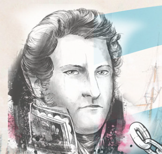
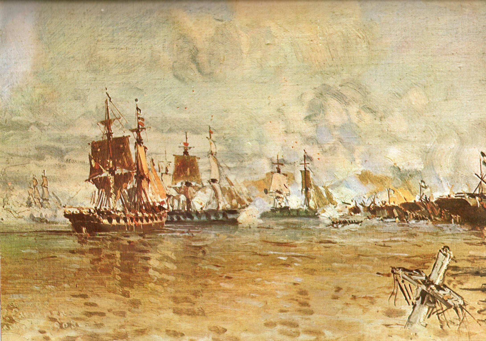
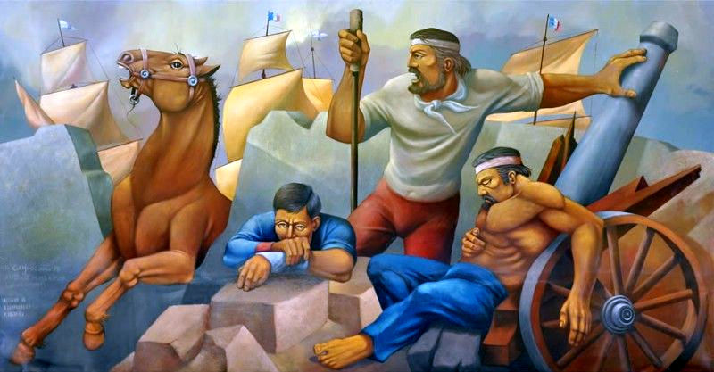
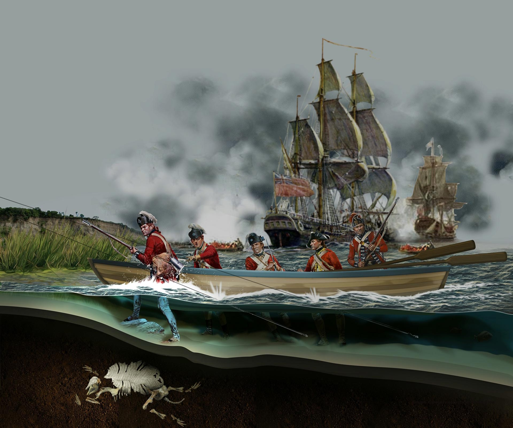
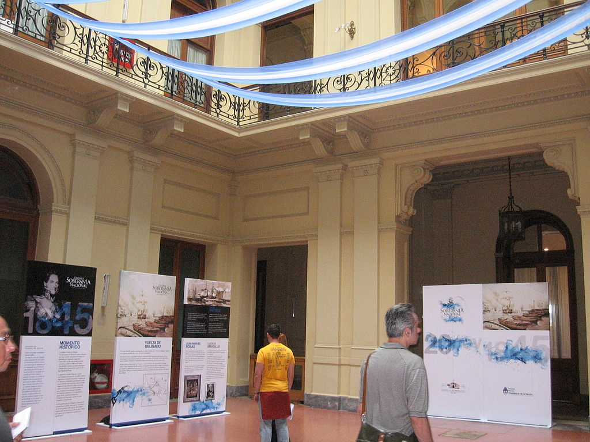

En qué pais se celebra?
Se celebra en Argentina.

Cuando se celebra?
Según el calendario, el 20 de noviembre es la fecha de la Soberanía Nacional.

Por qué existe este festivo?
Conmemora la batalla de la Vuelta de Obligado que tuvo lugar el 20 de noviembre de 1845, en un recodo del río Paraná, al norte de la provincia de Buenos Aires.

Qué tradiciones hay en esa comunidad ese día?
Asistir a eventos culturales, Pasar tiempo con familiares y amigos.

Qué te gustaría hacer en este festivo?
Visitar lugares turísticos.